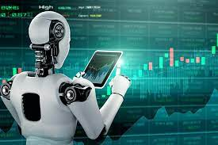
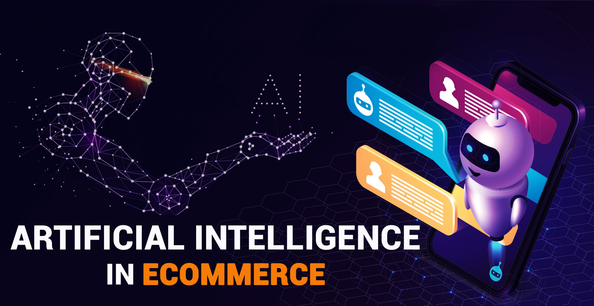
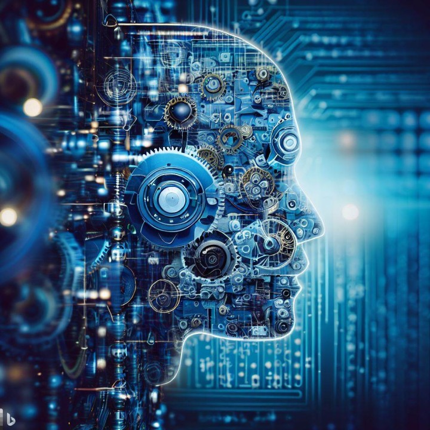

What is Artificial Intelligence?

Artificial Intelligence (AI) refers to the development of computer systems that can perform tasks requiring human intelligence, such as problem-solving, pattern recognition, and decision-making Artificial Intelligence (AI) is like teaching computers to think and make decisions similar to humans. It involves creating smart machines that can learn from experiences, analyze information, and solve problems, enabling them to perform tasks that normally require human intelligence.
Artificial Intelligence (AI)
Artificial intelligence (AI) is the intelligence of machines or software, as opposed to the intelligence of living beings, primarily of humans. It is a field of study in computer science that develops and studies intelligent machines. Such machines may be called AIs.
Applications of AI Technology
AI technology is widely used throughout industry, government, and science. Some high-profile applications are: advanced web search engines (e.g., Google Search), recommendation systems (used by YouTube, Amazon, and Netflix), interacting via human speech (such as Google Assistant, Siri, and Alexa), self-driving cars (e.g., Waymo), generative and creative tools (ChatGPT and AI art), and superhuman play and analysis in strategy games.
History of AI Research
Alan Turing was the first person to conduct substantial research in the field that he called machine intelligence. Artificial intelligence was founded as an academic discipline in 1956. The field went through multiple cycles of optimism, followed by periods of disappointment and loss of funding, known as AI winter. Funding and interest vastly increased after 2012 when deep learning surpassed all previous AI techniques, and after 2017 with the transformer architectural This led to the AI spring of the early 2020s, with companies, universities, and laboratories overwhelmingly based in the United States pioneering significant advances in artificial intelligence.
Impact of AI in the 21st Century
The growing use of artificial intelligence in the 21st century is influencing a societal and economic shift towards increased automation, data-driven decision-making, and the integration of AI systems into various areas of life, impacting job markets, healthcare, government, industry, and education. This raises questions about the ethical implications and risks of AI, prompting discussions about regulatory policies to ensure the safety and benefits of the technology.
Goals and Techniques of AI Research
The various sub-fields of AI research are centered around particular goals and the use of particular tools. The traditional goals of AI research include reasoning, knowledge representation, planning, learning, natural language processing, perception, and support for robotics. General intelligence (the ability to complete any task performable by a human) is among the field's long-term goals.
Problem-Solving Techniques in AI
To solve these problems, AI researchers have adapted and integrated a wide range of problem-solving techniques, including search and mathematical optimization, formal logic, artificial neural networks, and methods based on statistics, operations research, and economics. AI also draws upon psychology, linguistics, philosophy, neuroscience and other fields.
AI in Robotics
AI in robotics is when robots are programmed to think and make decisions on their own, without needing constant human control. It's like giving robots a kind of "brain" that helps them learn from their experiences and surroundings, so they can do tasks more efficiently and adapt to different situations. This can include things like recognizing objects, figuring out the best way to move, or even learning new tasks over time.
One example of AI in robotics is in self-driving cars. These cars use AI algorithms to sense their surroundings, make decisions about driving, and navigate safely without human intervention. The AI system processes data from cameras, radar, and other sensors to detect obstacles, traffic signs, pedestrians, and other vehicles. Based on this information, it can make real-time decisions such as when to brake, accelerate, or change lanes. This integration of AI in self-driving cars is a significant example of AI in robotics that aims to improve transportation efficiency and safety.
What is Robotics?
Robotics is a field that deals with the creation and designing of these mechanical humans. And Robotics these days is not only restricted to the mechanical and electronics domain. Nowadays, robots are becoming ‘smarter’ and more efficient with the help of computer science.
What is Robotics in Artificial Intelligence?
Artificial Intelligence has played a very major role not only in increasing the comforts of humans but also by increasing industrial productivity which includes the quantitative as well as qualitative production and cost-efficiency.
Robotics and artificial intelligence (AI) are closely related fields, and when combined, they give rise to a discipline known as robotic artificial intelligence or simply “robotics in artificial intelligence.”
Robotics in AI involves integrating AI technologies into robotic systems to enhance their capabilities and enable them to perform more complex tasks.
AI in robotics allows robots to learn from experience, adapt to new situations, and make decisions based on data from sensors. This can involve machine learning, computer vision, natural language processing, and other AI techniques.
Robots can use machine learning algorithms to analyze data, recognize patterns, and improve their performance over time. This is particularly useful for tasks where the environment is dynamic or unpredictable.
AI-powered vision systems enable robots to interpret and understand visual information from the surroundings. This is crucial for tasks like object recognition, navigation, and manipulation.
The combination of robotics and AI opens up a wide range of applications, including autonomous vehicles, drones, industrial automation, healthcare robots, and more. The synergy between these fields continues to advance, leading to increasingly sophisticated and capable robotic systems.
Applications of AI in Robotics
The applications of AI in robotics are diverse and continually expanding as technology advances. Let’s see few notable applications where AI plays a crucial role in enhancing the capabilities of robotic systems:
Manufacturing:
AI-powered robots automate tasks like assembly, welding, and quality control, improving efficiency and accuracy.
Healthcare:
Surgical robots assist doctors with minimally invasive procedures, while other robots help with patient care and rehabilitation.
Logistics and delivery:
Autonomous drones and robots deliver packages and perform warehouse tasks, optimizing logistics and reducing delivery times.
Exploration and disaster response:
AI-powered robots can explore dangerous environments, perform search and rescue operations, and assist in disaster recovery efforts.
Agricultural Robotics:
AI-enabled robots are used in precision agriculture for tasks such as planting, harvesting, and monitoring crop health.
Drones equipped with AI:
can analyze data from sensors to provide insights into crop conditions.
Applications of AI in real life
Siri, Alexa, and Google Assistant use AI to understand your voice commands, answer questions, control smart home devices, and set reminders.
Streaming services like Netflix and Spotify use AI to recommend movies, shows, and music based on your past viewing and listening habits.
AI algorithms curate your news feed, suggest friends and connections, and even detect and remove harmful content.
Email providers use AI to identify and filter out spam messages before they reach your inbox.
Banks and credit card companies utilize AI to analyze transactions and identify suspicious activity to prevent fraud.
AI in Finance
AI in finance is using smart computer programs to help with money-related tasks. These programs can analyze lots of data really fast to make predictions about things like stock prices, fraud detection, or even suggesting the best investments. It's like having a super-fast and super-smart assistant for managing money!
An example of AI in finance is in algorithmic trading. Investment firms use AI algorithms to analyze vast amounts of market data, news, and trends to make rapid trading decisions. These algorithms can execute trades at speeds much faster than humans, taking advantage of even small market inefficiencies.
What is AI in finance?
Artificial intelligence (AI) in finance helps drive insights for data analytics, performance measurement, predictions and forecasting, real-time calculations, customer servicing, intelligent data retrieval, and more. It is a set of technologies that enables financial services organizations to better understand markets and customers, analyze and learn from digital journeys, and engage in a way that mimics human intelligence and interactions at scale.
How is AI used in finance?
AI in finance can help in five general areas: personalize services and products, create opportunities, manage risk and fraud, enable transparency and compliance, and automate operations and reduce costs.
Benefits of AI in Finance
Automation
AI can help automate workflows and processes, work autonomously and responsibly, and empower decision making and service delivery. For example, AI can help a payments provider automate aspects of cybersecurity by continuously monitoring and analyzing network traffic. Or, it may enhance a bank’s client-first approach with more flexible, personalized digital banking experiences that meet client needs faster and more securely.
Accuracy
AI can help financial services organizations control manual errors in data processing, analytics, document processing and onboarding, customer interactions, and other tasks through automation and algorithms that follow the same processes every single time.
Efficiency
When AI is used to perform repetitive tasks, people are free to focus on more strategic activities. AI can be used to automate processes like verifying or summarizing documents, transcribing phone calls, or answering customer questions like “what time do you close?” AI bots are often used to perform routine or low-touch tasks in the place of a human.
Speed
AI can process more information more quickly than a human, and find patterns and discover relationships in data that a human may miss. That means faster insights to drive decision making, trading communications, risk modeling, compliance management, and more.
Availability
With AI, you can help your customers complete financial tasks, find solutions to meet their goals, and manage and control their finances whenever and where they are. When running in the cloud, AI and ML can continuously work on its assigned activities.
Innovation
The ability to analyze vast amounts of data quickly can lead to unique and innovative product and service offerings that leapfrog the competition. For instance, AI has been used in predictive analytics to modernize insurance customer experiences without losing the human touch.
AI in Healthcare

AI in healthcare means using smart computer programs and machines to help doctors and nurses take care of patients better. These programs can analyze a lot of information from things like medical records, images (like X-rays or MRIs), and even genetic data. They can then help doctors make diagnoses, find the best treatments, and even predict health issues before they happen. It's like having a really clever assistant for doctors and nurses!
An example of AI in healthcare is in medical imaging analysis. AI systems can analyze medical images like X-rays, CT scans, and MRIs to assist radiologists in diagnosing diseases and conditions.
The Emergence of Artificial Intelligence (AI) in Healthcare
The emergence of artificial intelligence (AI) in healthcare has been groundbreaking, reshaping the way we diagnose, treat, and monitor patients. This technology is drastically improving healthcare research and outcomes by producing more accurate diagnoses and enabling more personalized treatments. AI in healthcare’s ability to analyze vast amounts of clinical documentation quickly helps medical professionals identify disease markers and trends that would otherwise be overlooked. By leveraging artificial intelligence in hospital settings and clinics, healthcare systems can become smarter, faster, and more efficient in providing care to millions of people worldwide. Artificial intelligence in healthcare is truly turning out to be the future – transforming how patients receive quality care while mitigating costs for providers and improving health outcomes.
It all began with IBM's Watson artificial intelligence system, which was developed to answer questions accurately and quickly. Articles on artificial intelligence in healthcare mention IBM’s launch of a healthcare-specific version of Watson in 2011 that focused on natural language processing—the technology used to understand and interpret human communication. Today, alongside IBM, other tech giants like Apple, Microsoft, and Amazon are increasingly investing in AI technologies for the healthcare sector.
The potential implications of artificial intelligence in healthcare are truly remarkable. AI in healthcare is expected to play a major role in redefining the way we process healthcare data, diagnose diseases, develop treatments, and even prevent them altogether. By using artificial intelligence in healthcare, medical professionals can make more informed decisions based on more accurate information - saving time, reducing costs, and improving medical records management overall. From identifying new cancer treatments to improving patient experiences, AI in healthcare promises to be a game changer - leading the way towards a future where patients receive quality care and treatment faster and more accurately than ever before.
Types of Artificial Intelligence and Healthcare Industry Benefits
Let’s take a look at a few of the different types of artificial intelligence and healthcare industry benefits that can be derived from their use.
Diagnosis and Treatment Applications
Diagnosis and treatment of disease has been at the core of artificial intelligence AI in healthcare for the last 50 years. Early rule-based systems had potential to accurately diagnose and treat disease, but were not totally accepted for clinical practice. They were not significantly better at diagnosing than humans, and the integration was less than ideal with clinician workflows and health record systems.
But whether rules-based or algorithmic, using artificial intelligence in healthcare for diagnosis and treatment plans can often be difficult to marry with clinical workflows and EHR systems. Integration issues into healthcare organizations has been a greater barrier to widespread adoption of AI in healthcare when compared to the accuracy of suggestions. Much of the AI and healthcare capabilities for diagnosis, treatment, and clinical trials from medical software vendors are standalone and address only a certain area of care. Some EHR software vendors are beginning to build limited healthcare analytics functions with AI into their product offerings, but are in the elementary stages. To take full advantage of the use of artificial intelligence in healthcare using a stand alone EHR system providers will either have to undertake substantial integration projects themselves, or leverage the capabilities of third-party vendors that have AI capabilities and can integrate with their EHR.
AI in ECommerce
AI in ECommerce means using smart computer programs to improve online shopping experiences. These programs can analyze customer behavior and preferences to suggest products they might like, personalize recommendations, and even predict trends in demand. It's like having a helpful assistant that makes online shopping easier and more enjoyable, leading to better choices and happier customers!
An example of AI in eCommerce is Amazon's recommendation system. When you shop on Amazon, you'll notice that the website suggests products that you might be interested in based on your browsing and purchasing history. This recommendation system is powered by AI algorithms that analyze a variety of factors to predict what you might want to buy next.
The Role of AI in eCommerce
The role of AI in eCommerce is multifaceted and crucial for the industry's growth and efficiency. Here are some key roles AI plays:
- Personalization: AI enables eCommerce platforms to offer personalized shopping experiences by analyzing customer data and recommending products based on past purchases, browsing history, and preferences.
- Predictive Analytics: AI helps eCommerce businesses forecast demand and trends by analyzing large datasets, allowing retailers to optimize pricing strategies and stock inventory accordingly.
- Customer Service: AI-powered chatbots and virtual assistants provide instant and efficient customer support, answering questions and processing orders, thereby improving the overall customer experience.
- Visual Search: AI enables visual search capabilities, allowing customers to upload images to find similar products, particularly useful in fashion and home decor.
- Fraud Detection: AI algorithms detect fraudulent activities in real-time by analyzing transaction patterns, ensuring secure transactions for customers and preventing financial losses for businesses.
- Dynamic Pricing: AI-driven dynamic pricing adjusts product prices based on demand, competitor pricing, and market conditions, optimizing pricing for maximum profit.
- Supply Chain Optimization: AI optimizes supply chain operations by predicting demand, optimizing inventory levels, and improving logistics and shipping processes, leading to cost reductions and faster delivery times.
- Product Recommendations: AI-powered recommendation engines suggest relevant products to customers based on their behavior and preferences, enhancing the shopping experience and increasing sales.
- Content Generation: AI can automatically generate product descriptions, reviews, and other content, saving time for eCommerce businesses and ensuring consistent, high-quality content.
- Marketplace Insights: AI analyzes market trends, competitor strategies, and customer feedback to provide valuable insights, helping businesses make informed decisions and stay competitive.
Ways AI is Used in eCommerce
AI in eCommerce has revolutionized the way businesses operate and how consumers shop online. Here are some ways AI is used in eCommerce:
- Personalized Recommendations: AI algorithms analyze customer behavior and preferences to suggest products tailored to individual shoppers, enhancing the customer experience and increasing sales.
- Chatbots and Virtual Assistants: AI-powered chatbots provide 24/7 customer support and guide shoppers through their buying journey, enhancing customer service.
- Dynamic Pricing: AI helps retailers set optimal prices based on real-time demand and competitor pricing, ensuring competitiveness and maximizing profits.
- Inventory Management: AI algorithms predict demand and optimize stock levels, leading to improved efficiency and reduced costs.
- Fraud Detection: AI can identify fraudulent transactions by analyzing patterns and anomalies, reducing the risk of financial losses.
- Visual Search: Customers can upload images to find similar products, making it easier to discover items they like, particularly useful in fashion and home decor.
- Customer Insights: AI analyzes customer feedback and social media data to provide valuable insights into trends and preferences, helping businesses make informed decisions.
- Enhanced Product Descriptions: Natural Language Processing algorithms generate detailed product descriptions, improving SEO and providing more information to customers.
- Recommendation Engines: AI can recommend complementary items based on what other customers have bought together, increasing sales.
- Supply Chain Optimization: AI optimizes logistics and shipping routes, reducing delivery times and costs.
Overall, AI is playing a pivotal role in making eCommerce more efficient, customer-centric, and profitable for businesses.
AI in Gaming
AI in gaming means using smart computer programs to control characters and make games more fun and challenging. These programs can act like virtual opponents, adjusting their strategies based on how players are doing. They can also help create realistic worlds, control non-player characters (NPCs), and even personalize gameplay for each player. It's like having a virtual brain in the game that makes it more exciting and interesting!
What Is AI in Gaming?
AI in gaming refers to responsive and adaptive video game experiences. These AI-powered interactive experiences are usually generated via non-player characters, or NPCs, that act intelligently or creatively, as if controlled by a human game-player. AI is the engine that determines an NPC’s behavior in the game world.
While AI in some form has long appeared in video games, it is considered a booming new frontier in how games are both developed and played. AI games increasingly shift the control of the game experience toward the player, whose behavior helps produce the game experience.
AI procedural generation, also known as procedural storytelling, in game design refers to game data being produced algorithmically rather than every element being built specifically by a developer.
Why Does AI in Gaming Matter?
AI in gaming is all about enhancing a player’s experience. It is especially important as developers deliver gaming experiences to different devices. No longer is gaming simply a choice between console or desktop computer. Rather, players expect immersive game experiences on a vast array of mobile and wearable devices, from smartphones to VR headsets, and more. AI enables developers to deliver console-like experiences across device types.
AI in Education

AI in education is using smart computer programs to help students learn better. These programs can personalize learning by adapting to each student's needs and pace. They can provide extra practice when needed, suggest new topics to explore, and even grade assignments automatically. It's like having a personalized tutor that helps students learn in a way that's just right for them!
Benefits of AI in Education:
1. Personalized Learning: AI algorithms can analyze students' learning patterns, strengths, and weaknesses to create personalized learning experiences. This helps students learn at their own pace and style.
2. Efficient Grading: AI-powered systems can automate grading for multiple-choice questions, freeing up teachers' time to focus on more meaningful tasks like providing feedback and engaging with students.
3. Virtual Teaching Assistants: Chatbots and virtual assistants can answer student queries, provide tutoring, and offer 24/7 support, improving accessibility to educational resources.
4. Adaptive Learning Platforms: AI-driven platforms like Duolingo and Khan Academy adapt content based on student performance, providing additional practice or challenges as needed.
5. Data Analysis: AI can process vast amounts of data to identify patterns and trends in student performance, helping educators make data-driven decisions to improve teaching methods and curriculum design.
6. Language Translation: AI-powered translation tools break down language barriers, allowing students to access educational materials in their native language.
7. Content Creation: AI can generate educational content such as quizzes, lesson plans, and interactive modules, aiding teachers in creating engaging materials.
8. Assessment Tools: AI can provide real-time feedback on assignments, quizzes, and tests, helping students understand their strengths and areas needing improvement.
9. Remote Learning Support: Especially relevant during the COVID-19 pandemic, AI tools facilitate remote learning through virtual classrooms, video conferencing, and collaboration platforms.
10. Facial Recognition and Emotion Analysis: Some AI applications use facial recognition to monitor student engagement levels and assess emotions, providing valuable insights to educators.
Challenges and Considerations:
1. Privacy and Data Security: AI systems gather and analyze vast amounts of student data, raising concerns about privacy protection and data security.
2. Equity and Access: Not all students have equal access to AI-powered tools, which can exacerbate existing educational inequalities.
3. Ethical Use: Ensuring AI is used ethically and responsibly in education is crucial, especially concerning issues like bias in algorithms and decision-making.
4. Teacher Training: Educators need proper training to effectively integrate AI tools into their teaching practices and make the most of these technologies.
5. Overreliance on Technology: There is a risk of overreliance on AI, potentially diminishing the role of teachers and human interaction in the learning process.
Examples of AI in Education:
- IBM Watson Tutor: An AI-powered tutoring system that provides personalized learning experiences.
- Carnegie Learning: Offers AI-driven math solutions that adapt to individual student needs.
- DreamBox: An adaptive learning platform for K-8 mathematics, using AI to provide personalized math instruction.
- Coursera: Utilizes AI to recommend courses to users based on their preferences and past behavior.
- SMART Learning Suite Online: Integrates AI to help teachers create interactive and engaging lessons.
Machine Learning
AI in machine learning is when computers learn to do tasks without being explicitly programmed for each step. It's like teaching a computer to learn from examples and data, so it can make decisions or predictions on its own. For example, showing it lots of pictures of cats and dogs so it can learn to tell them apart. It's about teaching computers to learn and improve from experience, just like we do!
Artificial Intelligence (AI) in Machine Learning
Artificial Intelligence (AI) in machine learning is a broad and constantly evolving field. Here's a summary of key information about AI in machine learning:
What is AI in Machine Learning?
- Artificial Intelligence (AI): The development of computer systems capable of performing tasks that typically require human intelligence. It encompasses a wide range of techniques and approaches.
- Machine Learning (ML): A subset of AI that focuses on enabling machines to learn from data without being explicitly programmed. It allows systems to improve their performance on tasks through experience.
Types of Machine Learning:
- Supervised Learning: The algorithm is trained on labeled data, where the input data is paired with the correct output. It learns to map inputs to outputs.
- Unsupervised Learning: The algorithm is given unlabeled data and must find patterns and relationships on its own.
- Reinforcement Learning: An agent learns to make decisions by interacting with an environment. It receives feedback in the form of rewards or penalties.
AI in Machine Learning Applications:
- Natural Language Processing (NLP)
- Computer Vision
- Predictive Analytics
- Recommendation Systems
- Healthcare
- Finance
- Autonomous Vehicles
Techniques in AI and ML:
- Neural Networks
- Deep Learning
- Decision Trees
- Support Vector Machines (SVM)
- Clustering Algorithms
Challenges and Considerations:
- Data Quality
- Interpretability
- Ethical Concerns
- Computational Power
- Continuous Learning
Future Trends:
- Explainable AI
- Federated Learning
- AIoT (AI + Internet of Things)
- Quantum Machine Learning
- AI Ethics and Regulation
This is a broad overview, and each of these topics can delve much deeper depending on the specific application or context.
AI in Marketing
AI in marketing is using smart computer programs to help companies sell their products or services better. These programs can analyze data about customers' behavior, preferences, and trends to make targeted advertisements and promotions. They can also personalize marketing messages for different people, making them more likely to buy. It's like having a super-smart assistant that helps companies reach the right customers with the right message at the right time!
Artificial Intelligence (AI) in Marketing
Artificial Intelligence (AI) is transforming the field of marketing, offering new ways to analyze data, automate tasks, personalize customer experiences, and predict outcomes. Here's a comprehensive overview of AI in marketing:
Applications of AI in Marketing:
1. Customer Segmentation and Targeting: AI helps identify and group customers based on behavior, demographics, and preferences. Enables personalized marketing campaigns tailored to specific segments.
2. Predictive Analytics: AI algorithms predict future outcomes based on historical data. Forecasting customer behavior, sales trends, and marketing campaign effectiveness.
3. Personalized Recommendations: AI analyzes customer behavior to recommend products/services. Used in e-commerce, streaming services, and content platforms.
4. Content Creation and Curation: AI can generate content like product descriptions, blog posts, and social media updates. Curates content for social media feeds and email campaigns based on user preferences.
5. Chatbots and Virtual Assistants: AI-powered chatbots provide 24/7 customer support and assistance. Enhances customer service, reduces response times, and handles routine inquiries.
6. Sentiment Analysis: AI analyzes social media, reviews, and customer feedback to gauge sentiment. Helps in understanding brand perception and customer satisfaction.
7. Dynamic Pricing: AI adjusts pricing based on demand, competitor pricing, and other variables. Optimizes pricing strategies for maximum revenue.
8. Ad Targeting and Optimization: AI optimizes ad placements, targeting, and bidding in real-time. Improves ad performance and ROI across platforms like Google Ads and social media.
9. Marketing Automation: AI automates repetitive tasks like email campaigns, lead nurturing, and scheduling. Saves time and resources, improves efficiency, and increases scalability.
AI Techniques in Marketing:
1. Machine Learning: Powers predictive analytics, customer segmentation, and personalized recommendations. Algorithms learn from data to make data-driven marketing decisions.
2. Natural Language Processing (NLP): Analyzes and generates human language. Used in chatbots, sentiment analysis, content creation, and social listening.
3. Computer Vision: Analyzes visual content like images and videos. Used in image recognition for branding, product identification, and social media monitoring.
4. Deep Learning: A subset of ML, excels in image and speech recognition. Used in content generation, chatbots, and image analysis.
5. Predictive Modeling: Creates models to predict future trends and behaviors. Helps in forecasting sales, customer churn, and campaign success.
Benefits of AI in Marketing:
- Improved Personalization: Tailoring marketing efforts to individual preferences.
- Enhanced Customer Experience: Chatbots, personalized recommendations, and fast responses.
- Cost Efficiency: Automation reduces manual labor and improves efficiency.
- Data-Driven Insights: AI analyzes vast amounts of data for actionable insights.
- Increased ROI: Optimizing campaigns and targeting leads to better returns on investment.
Challenges and Considerations:
- Data Privacy: Ensuring compliance with data protection laws.
- Integration: Implementing AI systems with existing marketing technologies.
- Ethical Use: Avoiding bias in algorithms and maintaining transparency.
- Skill Gaps: Requires trained professionals to implement and manage AI systems.
- Initial Investment: Cost of implementing AI solutions can be significant.
Future Trends in AI Marketing:
- Hyper-Personalization: Even more tailored experiences based on real-time data.
- AI-Driven SEO: AI algorithms for optimizing search engine rankings.
- Voice Search Optimization: AI strategies for voice-based searches.
- Augmented Reality (AR) and AI: Blending AR with AI for immersive marketing experiences.
- AI-Powered Customer Journey Mapping: Understanding and optimizing every touchpoint of the customer journey.
AI continues to evolve rapidly, and its integration with marketing is expected to grow, providing marketers with more tools to understand, reach, and engage with their target audiences.